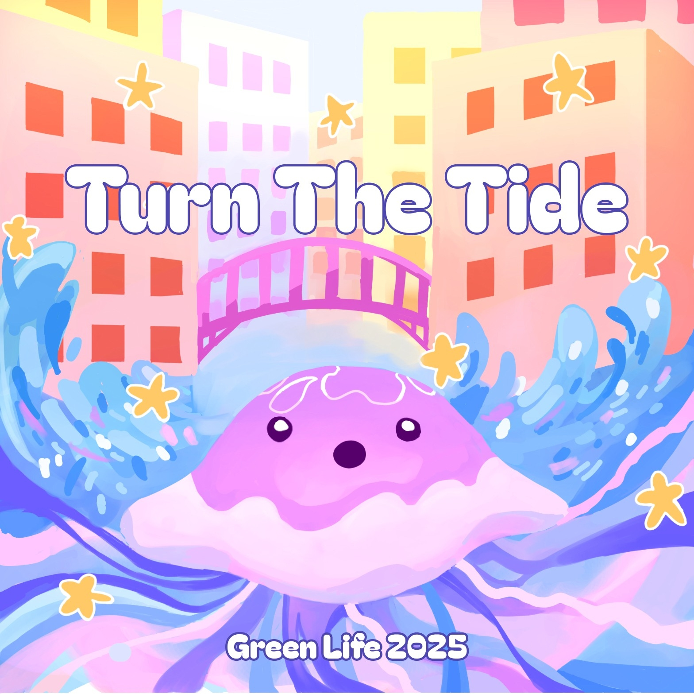
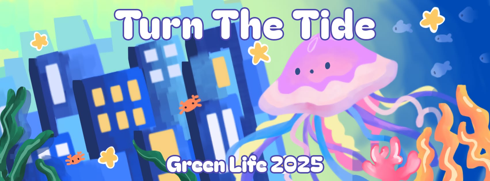

WELCOME TO JOLLY’S JOURNEY: TURN THE TIDE, LIGHT THE SKY!
Cạch… Một chiếc lọ trôi dạt vào bờ kèm theo lời cầu cứu từ Jolly - chú sứa nhỏ đương phiêu dạt khắp tận cùng đại dương rộng lớn - gửi tới tòa soạn báo GHA. Ngay lập tức, các phóng viên được cử đi điều tra và báo cáo qua bộ đàm về tình hình đáng báo động ngoài khơi!
Gần đây, các hiện tượng như băng tan, thay đổi dòng chảy đại dương,… khiến mực nước biển toàn cầu tăng nhanh. Theo NASA, từ năm 1993, nước biển đã tăng 101mm, với tốc độ từ 1,7mm/năm lên 4,3mm/năm. Hệ sinh thái dưới đại dương đang hoang hoải chết dần, chết mòn do nước biển ấm lên và bị axit hóa. Hàng triệu người dân ven biển đối mặt với nguy cơ mất nhà cửa, sinh kế, trong khi động thực vật biển bị ảnh hưởng nghiêm trọng. Với tình hình đáng báo động như vậy, dù sớm hay muộn, sự tồn vong của cộng đồng và hệ sinh thái trên “quả đất xanh” của chúng ta rồi cũng sẽ đe dọa!
Đứng trước thực trạng ấy, Green Life 2025: Turn the Tide, với mong muốn lan tỏa ý thức gìn giữ ngôi nhà chung của động - thực vật biển, đã đứng lên mà lắng nghe tiếng còi báo động. Bảo vệ môi trường sống của sinh vật cũng chính là bảo vệ môi trường sống của con người, đặc biệt là người dân tuyến đầu chịu ảnh hưởng ở vùng sông nước, ven biển. Jolly đã ra khơi, mang trong mình biết bao thấp thỏm, băn khoăn và cả hy vọng rực sáng.
Vậy còn bạn, liệu bạn đã sẵn sàng đồng hành cùng chú sứa nhỏ để “đảo ngược dòng triều”, để thay đổi tình thế và vẽ nên một bức tranh xanh cho tương lai hay chưa?
|